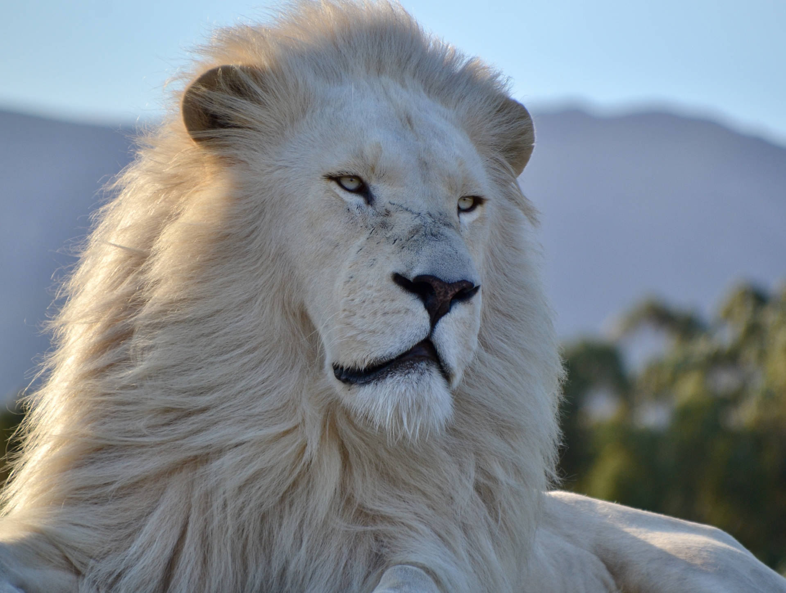

WiteLIon:
White lion is not a separate subspecies of lion, but a polymorph with a special genetic condition, leucism, which causes the body skin to become pale and makes it look like a white tiger. Such a genetic condition is similar to melanism in black panthers, where the color of the animal's skin turns black. However, these lions are not bald and the accumulation of pigments in their eyes and skin is normal. White Transfalcon lions have been seen in the corners of the Kruger National Park and the eastern regions of South Africa, but it is mostly in captivity that white lions are born, because breeders intentionally encourage lions to mate with each other that have the ability to produce white cubs. . Because their unusual white skin is due to a dominant gene.